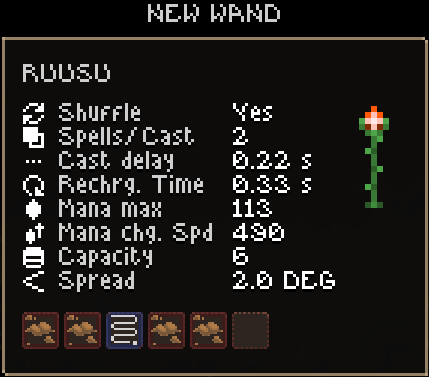

< Home/Noita stuff
1603767515

This seed has an oil puzzle in the mines which, when completed, gives you the wand shown above
Ping pong path is very useful if you have a luminous drill, especially if you also have a fast wand and add mana
Conveniently, in the mines there's a wand with firebolts that let you easily break the wooden wall without damaging to the environment
This seed also has a chaos die in a chest in collapsed mines
2047099437
This seed sometimes randomly creates gold nuggets on spawn. This may be a treasure chest being somehow opened and upwarping its contents
1603767515
This seed has the fire resistance perk in the first holy mountain